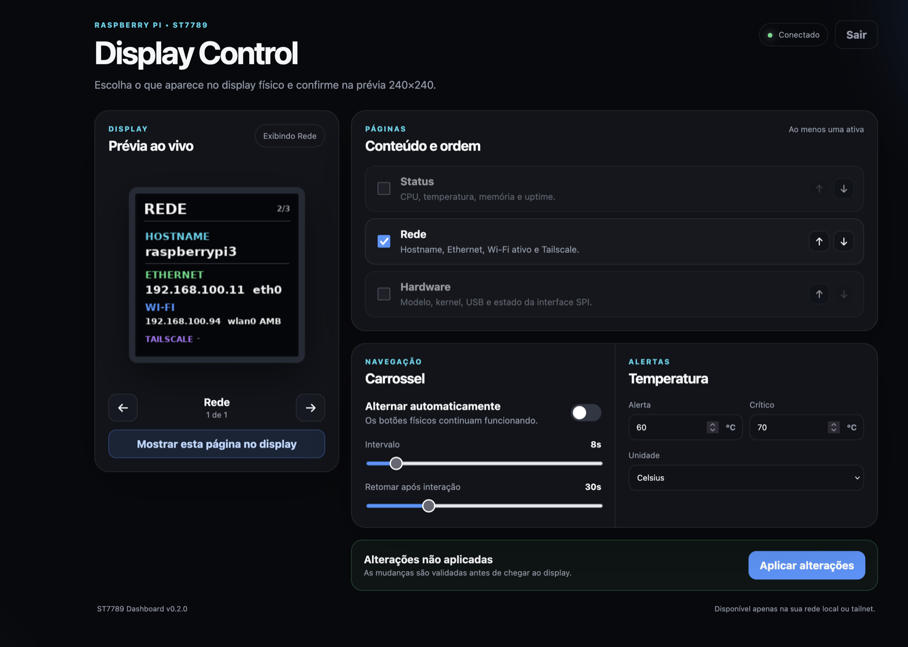

v0.3.0 validated on real hardware
v0.6.0: six HTTP/JSON templates and offline example checks; real-source validation pending
A TINY SCREEN WITH A USEFUL JOB
Turn your Raspberry Pi into a glanceable system dashboard
Monitor CPU, memory, network, hardware, services and weather on a 240×240 ST7789 display. Configure the pages from your phone or computer, while the display keeps working independently.
- 240×240shared physical + web rendering
- 2physical navigation buttons
- 100automated tests passing
 REAL HARDWARE
REAL HARDWARE
ONE DISPLAY, SEVERAL VIEWS
Useful information without opening another app
The page catalog is modular. Enable only what matters, choose the order and let the carousel rotate automatically—or use the physical buttons.
System status
CPU load, SoC temperature, memory usage and uptime with compact visual indicators.
Network
Hostname and active Ethernet, Wi-Fi and Tailscale addresses for headless access.
Hardware
Raspberry Pi model, Linux kernel, connected USB devices and SPI state.
SysOps
Disk usage, gateway latency, power history and allowlisted systemd services.
Weather
Current conditions, apparent temperature, daily minimum and maximum, and rain probability.
Pi-hole 6
Guided setup for query and blocking statistics, with an app password kept in a private local file. Read-only collection; real-service validation pending.
Home Assistant
Select up to four entities for your home, lights or energy. No control actions; credentials are never returned by the panel. Real-service validation pending.
Offline clock
Time, date, weekday and chosen timezone, with optional seconds and 12/24-hour format. Uses the device clock; TFT validation pending.
Pomodoro
Start, pause, resume and reset a focus cycle from the protected local panel. No internet or new button gestures; TFT validation pending.
Backup and restore
Export applied settings and restore a validated JSON file, keeping your local PIN and credential vault untouched.
Your own API
Turn selected values from an HTTP/JSON response into a metric or status page without changing the source code.
Source templates
Start with a metric, service, temperature, energy, Node-RED or list-item example. Check JSON paths without querying the source, then apply explicitly.
CONTROL IT FROM ANY BROWSER
Choose what appears on the physical display
The local web panel works on phones and computers. It uses the same Pillow renderer as the physical screen, so the 240×240 preview represents the frame sent to the display.
- Enable, disable and reorder pages
- Configure carousel timing and temperature alerts
- Preview and select a page immediately
- Protect changes with a local PIN and CSRF validation
- Keep the display running even if the web panel stops

PHOTOGRAPHED ON THE ACTUAL DEVICE
Software and hardware validated together
The reference build uses a Raspberry Pi 3 Model B V1.2, an ST7789 1.3-inch SPI module and its two onboard buttons on GPIO23 and GPIO24.

BUILT TO GROW
One renderer, several destinations
Data collection, page selection and rendering are separated from the display driver. That keeps the ST7789 stable today and creates a path to other resolutions and display technologies.
System + integrations→Page catalog→Pillow→ST7789 / PNG
Display profiles. The 240×240 ST7789 driver is production-ready. Software profiles for 128×64 monochrome and 320×240 color already validate framebuffer adaptation, while their physical drivers remain future work.
Safe custom sources. HTTP/JSON requests are read-only, bounded by time and size, block unsafe network destinations and use cached data when a provider is temporarily unavailable.
FROM REPOSITORY TO DESK
A repeatable Raspberry Pi installation
- 1
Connect the module
Use the documented SPI and button pinout, then enable SPI in Raspberry Pi OS.
- 2
Run the installer
The installer creates the Python environment, validates dependencies and installs the display and web services.
- 3
Open the local panel
Create a PIN, choose the pages, configure integrations and confirm the live preview.
KEEP OPEN HARDWARE PROJECTS MOVING
Support the project via PIX
Any optional contribution helps pay for display modules, Raspberry Pi tests, documentation and future integrations. The software remains open source.
PIX keyoabraaobatista@gmail.com
✓Optional contribution. Any amount helps the project continue. Thank you.
SCAN TO CONTRIBUTE
Open your banking app and scan the QR code. PIX is Brazil's instant-payment system.CLEAR BOUNDARIES
Local control without unnecessary exposure
Local by default. The control panel is intended for your LAN or tailnet, not direct public Internet exposure.
No remote shell. The API does not provide arbitrary command execution or filesystem paths supplied by the browser.
Internet is optional. Core system pages and physical navigation continue working without weather or external data providers.